Multidisciplinaire, passionnée et basée à Sherbrooke. Marlin est né d'un projet de fin de baccalauréat en génie mécanique, devenu groupe technique reconnu de l'Université de Sherbrooke le 28 janvier 2025.
Là où d'autres projets restent réservés aux finissants, Marlin s'ouvre à l'ensemble des étudiant·e·s en génie. On y explore la mécanique des fluides, le contrôle, l'aérodynamique, l'ingénierie environnementale et la performance sportive — encadrés par les membres fondateurs qui transmettent leur savoir.
Conception de la coque et des foils, allègement des pièces et fabrication composite, validés par CFD et tests en eau. Les hydrofoils sont aussi un terrain de jeu idéal pour s'exercer à concevoir de vraies ailes d'avion.
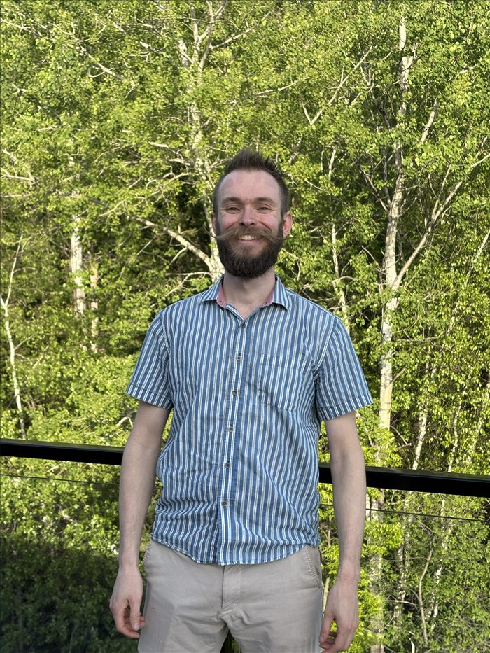
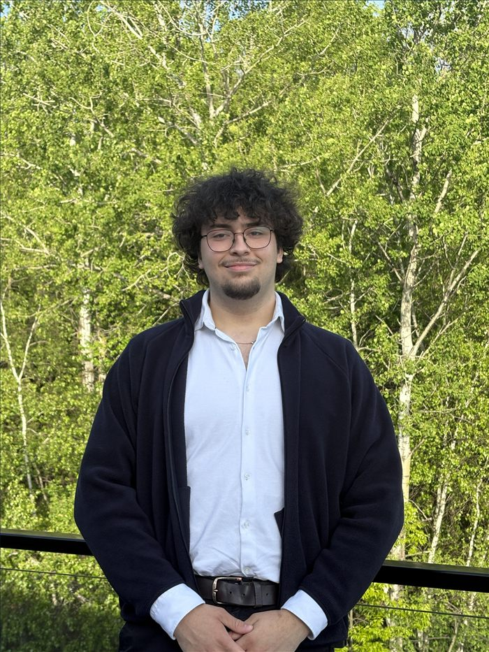
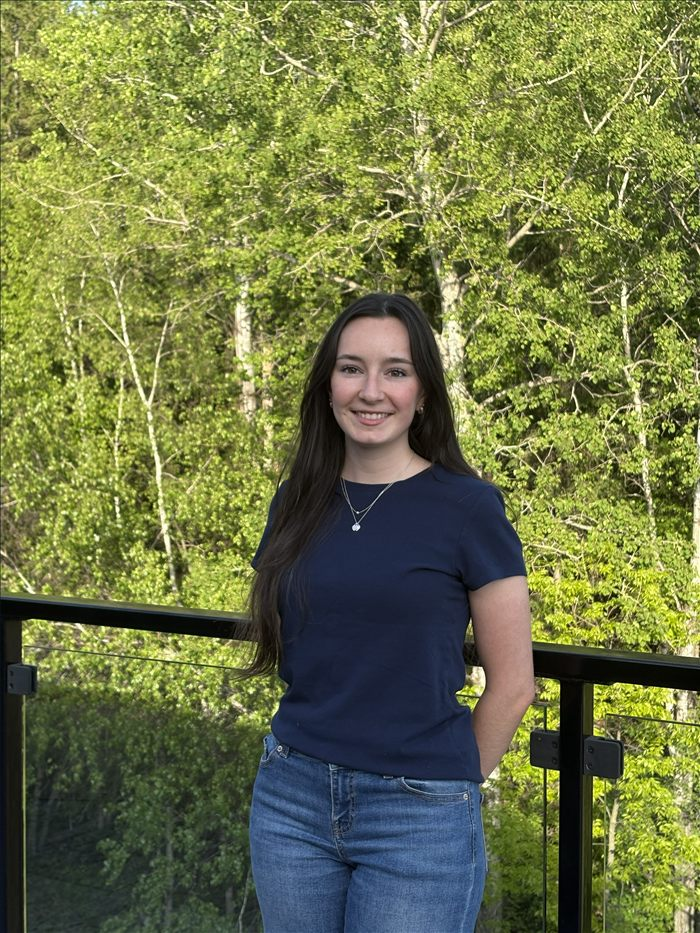
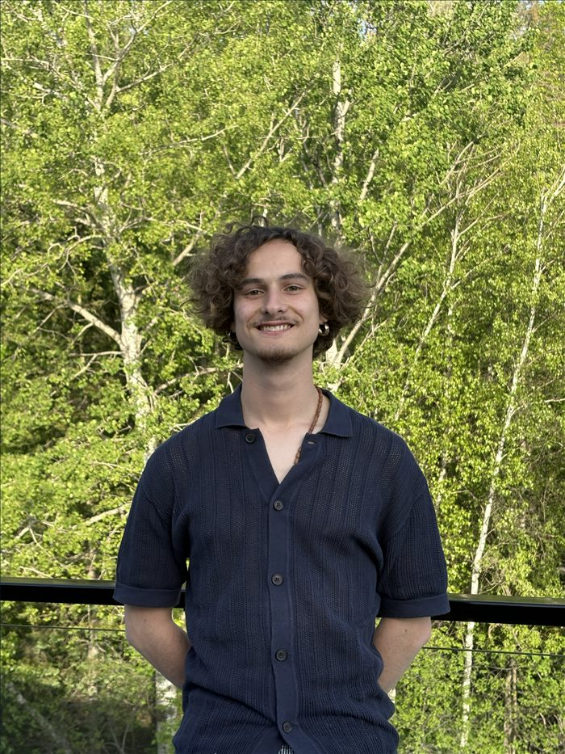
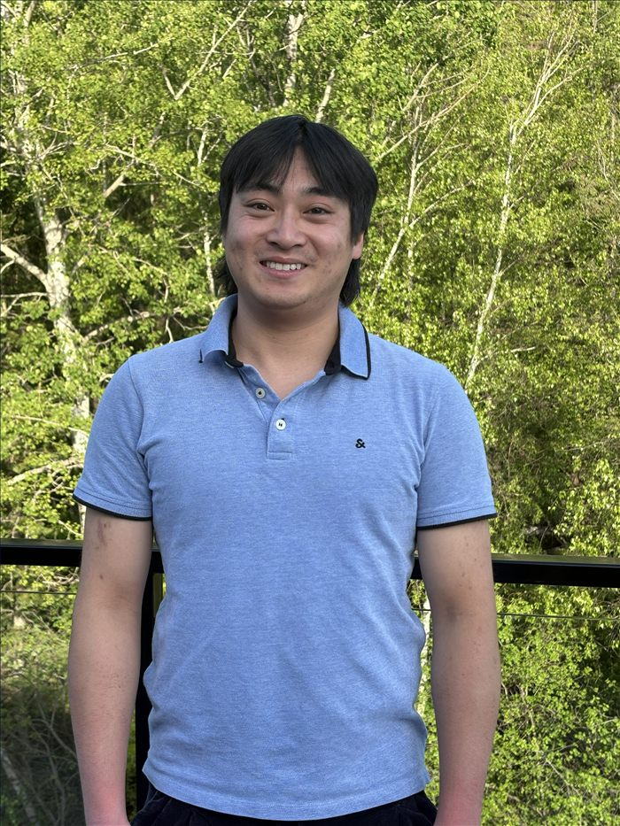
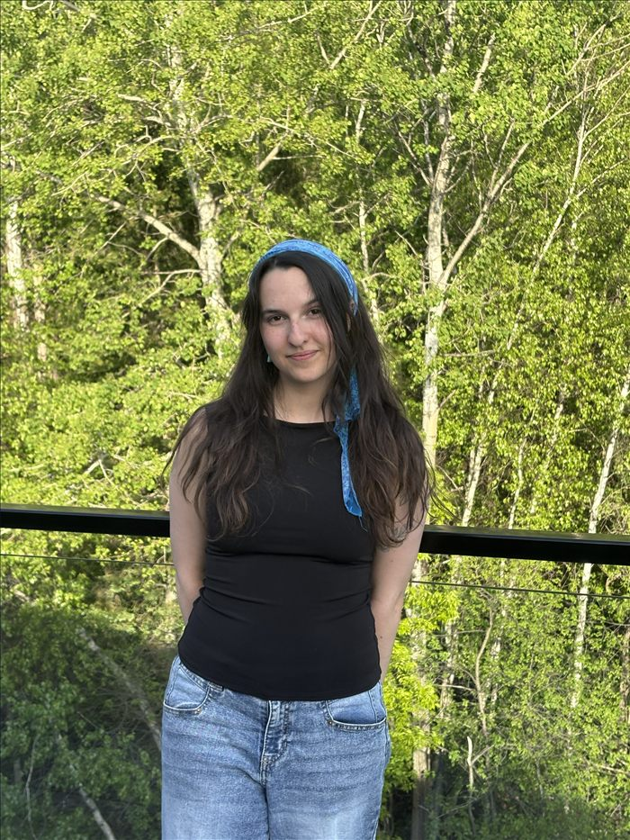
Système embarqué, capteurs, acquisition de données et télémétrie. L'électronique transforme chaque sortie sur l'eau en données exploitables.
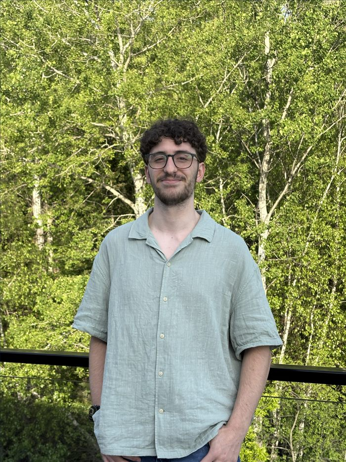
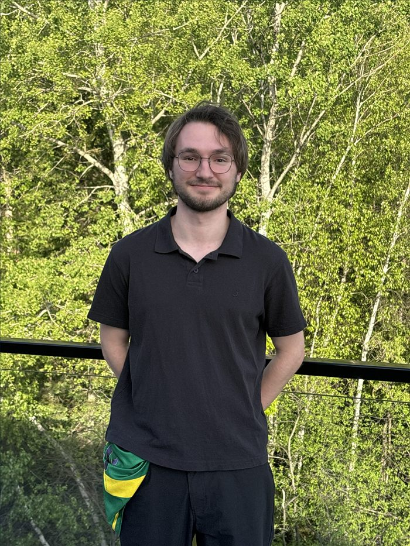
Partenariats, financement, rédaction et médias. C'est aussi la mission de démocratiser la voile au Québec — avec le Club de voile Memphrémagog et le club de voile universitaire — et de faire rayonner MARLIN bien au-delà de Sherbrooke.
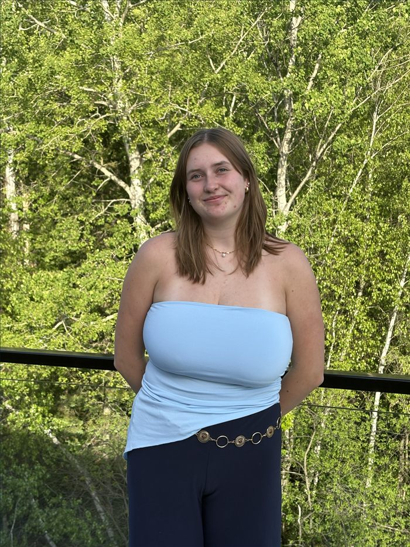
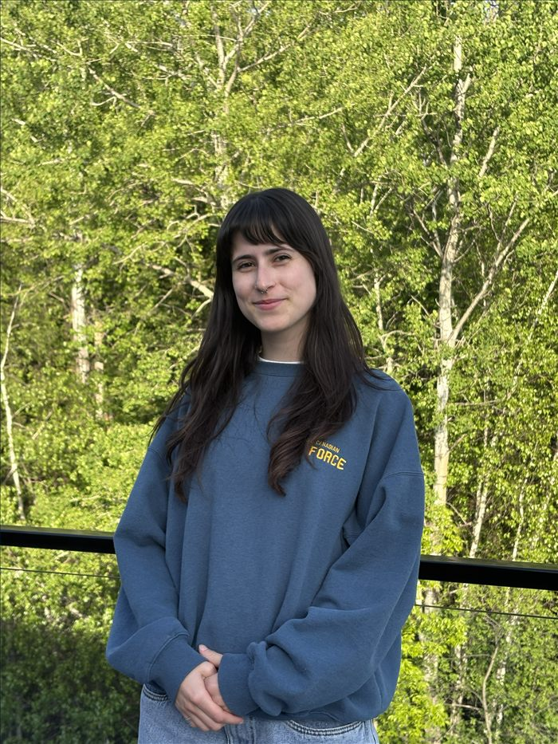
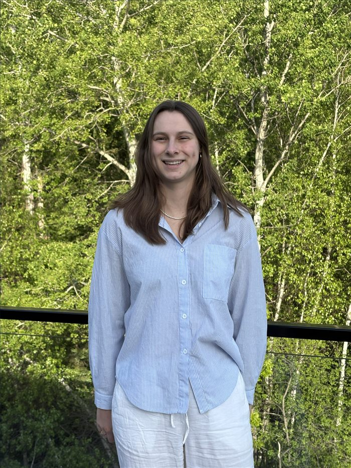
On cherche des étudiant·e·s passionné·e·s, curieux·ses et prêt·e·s à repousser les limites. Pas besoin d'être expert·e — juste motivé·e.
Conception de la coque, des foils, des systèmes mécaniques. Optimisation CFD, fabrication composites, tests en eau.
Conception PCB, firmware temps réel, capteurs, télémétrie LoRa. Si tu parles C et que tu aimes les oscilloscopes, c'est ici.
Réseaux de neurones, traitement des données, modélisation physique. Python, PyTorch, OpenFOAM — bienvenue dans la boucle.
Gestion des partenariats, médias sociaux, rédaction, événements. Fais rayonner MARLIN bien au-delà de Sherbrooke.
Envoie-nous ta candidature — un court message suffit. On veut savoir ce qui t'allume, pas ton CV.
Postuler maintenant →